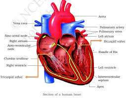

<DOCTYPE HTML>
   <html>
<head> 
   <meta name="viewport" content="width=device-width, initial-scale=1.0"> 
   <title>THE HEART</title>
<style>
h2{
     position: absolute;
     bottom: 250px;
     padding: 5px;
     left: 10px;
     
 }
.ida{
     position: absolute;
     bottom: 180px;
     padding: 5px;
     left: 10px;
     background-color: cornflowerblue;
 }
.tb3{
     position: absolute;
     bottom: 300px;
     padding: 1px;
     left: 10px;
     background-color: greenyellow;
 }
.idb{
     position: absolute;
     bottom: 230px;
     padding: 5px;
     left: 10px;
     background-color: greenyellow;
 }
.idC{
     position: absolute;
     bottom: 200px;
     padding: 5px;
     left: 10px;
     background-color: red;
 }
.idd{ 
   position: absolute;
     bottom: 130px;
     padding: 5px;
     left: 10px;
     background-color: blueviolet;
 }
 
 #demo{
     position: absolute;
     bottom: 320px;
     left: 150px;
     height: 300px;
     width: 300px;
     padding: 50px;
     background-color: firebrick;
 }
 
 body{
     
     background-color: khaki;
 }


</style>

</head>
<style>
  img{
    position: sticky;
   width:700px;
   height:700px;
   padding: 6px;
   
   left: 600px;
  }
</style>


<body>
      <table class="tb3">  <tr><td>
            <a href = "HOMEPAGE.html"><h4> HOME PAGE</h4></a>
          </td></tr></table><br>
   <table id="demo"></table>
<button class="ida" onclick = "myFunction()">AOTA</button>
<button class="idb" onclick = "myfunction()">PULMONARY VEINS</button>
<button class="idc" onclick = "myjunction()">LEFT AND RIGHT ATRIA</button>
<button class="idd" onclick = "myyunction()">LEFT AND RIGHT VENTRICALS</button>

</body>

<h2>THE ANATOMY OF THE HEART</h2>
 
   <script>    
function myFunction(){
var tx = "";
var records = ["the heart has aota  which is the greatest", 
               "artry that distibute blood to other arterise",
               "the most posible pipe that carries blood at very", 
               "presure hence the presence of thick walll",
               "to withstarnd the pressure"];
records.forEach(myFunction);
document.getElementById("demo").innerHTML = tx;

function myFunction(value, index, array) {
  tx = tx + value + "<br>"; 
}
}
function myfunction(){
var txt = "";
var text = ["pulmonary vein is the innlet of the heart ", 
            "it takes blood from the rungs full of oxygen",
          "to the heart unlike all other veins it",
            "has blood full of oxygen"];
text.forEach(myfunction);
document.getElementById("demo").innerHTML = txt;

function myfunction(value, index, array) {
  txt = txt + value + "<br>"; 
}
}
function myjunction(){
var xp = "";
var doc = ["atria pumps blood to the rungs for left atrium", 
               "and to the left vetrical for",
                "right atrium they hava thin wall as",
                 "copared to those of ventricals",
                 ];
doc.forEach(myjunction);
document.getElementById("demo").innerHTML = xp;

function myjunction(value, index, array) {
  xp = xp + value + "<br>"; 
}
}
function myyunction(){
var tp = "";
var docc = ["ventricals pumps blood to the rungs for right ventrical", 
               "and to the whole part of the body for",
                "left ventrical they hava thick wall as",
                 "copared to those of auricals",
                 "because they pump blood for the long distance"];
docc.forEach(myyunction);
document.getElementById("demo").innerHTML = tp;

function myyunction(value, index, array) {
  tp = tp + value + "<br>"; 
}
}
 </script>   


</body>
   
   
   
   
   
   
   
   </html>